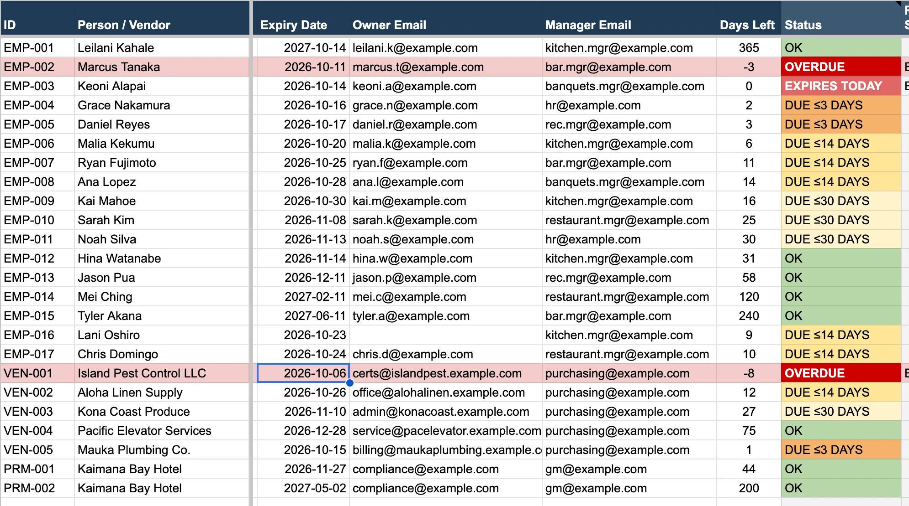
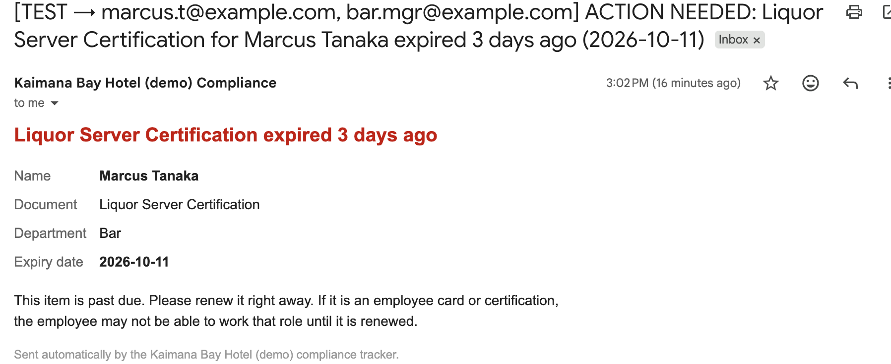

Compliance Tracker
Certification, permit and vendor-insurance expiry tracker
Flags lapses 30 days early, and you can try it in your own Google account
The problem
Food-handler cards, liquor-server certifications, permits and vendor insurance all expire on different days. Tracking lives in one person's spreadsheet or memory, and lapses surface on the day of an inspection.
What I built
- A Google Sheet with an automatic 7 am check that color-codes every item.
- Reminders to the owner at 30, 14 and 3 days, never the same one twice; escalation to the manager on the expiry day.
- Bad data (impossible dates, missing emails) is flagged and rerouted instead of breaking the run.
- An audit log of every reminder, escalation and renewal, and a live compliance dashboard.



How I know it works
- 22 automated tests, including a simulated 75-day timeline proving the exact reminder sequence.
- A 17-step manual test plan in a live sheet, which caught 4 issues the automated tests couldn't. All fixed and documented.
- Safe rollout: a preview mode that sends nothing, and a test mode that sends everything only to the tester.
Results
- Estimate: about 85 minutes a week saved for a 100-person property tracking about 150 items.
What I'd do next
- Let employees upload renewed cards through a form.
- Use AI to read expiry dates off uploaded certificates (see Paper Chaser).
Tools: Google Apps Script · Google Sheets · Gmail